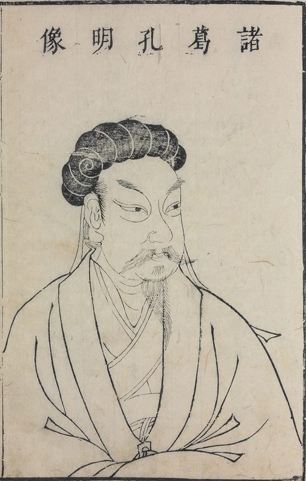

EMPTY FORT STRATAGEM
He once held a city with nothing but a guqin and an open gate — and he came back to play the same game against the only opponent who ever deserved it, with the end of war itself as the stakes.

EMPTY FORT STRATAGEM
He once held a city with nothing but a guqin and an open gate — and he came back to play the same game against the only opponent who ever deserved it, with the end of war itself as the stakes.
Feature map
Level-by-level features, as the figure refined them.
The Open Gates
Bonus action · 1 CE · until the start of your next turn.
Tier V · Controller (trickster) · suggested CE ability INT · Primary verb: Feint. Strength is a rumor you spread about yourself. Empty Fort Stratagem weaponizes absence: appear weak, let them commit, and invoice the commitment. The fort was empty. The invoice is real. Borrowed Arrows (core engine): whenever a ranged attack misses you, you gain 1 Borrowed Arrow (max = PB; arrows fade after 1 minute). When you activate a technique feature, you may expend any number of arrows: each arrow grants +1 to that feature's save DC or +1d6 to its damage. (He armed himself with the enemy's own attack.)
The first attack made against you before the duration ends has advantage — you invite it. If that attack misses, the attacker is Marked: your next attack against the Marked creature before the end of your next turn has advantage and deals +1d8 force damage, and you gain 1 Borrowed Arrow. (The gates are open. Come in.)
The Guqin on the Wall
Action · 3 CE · 1 minute (concentration).
You play. Every enemy within 60 ft that can hear you must make a WIS save against your technique DC. On a failure, the creature is frightened of you for the duration (it may repeat the save at the end of each of its turns) — not of your strength, but of the ambush it is certain you're hiding. (Sima Yi listened to the music, and retreated from an empty city.)
Stone Sentinel Maze
Action · 4 CE · 1 minute (concentration) · 40-ft cube within 60 ft.
The stones rearrange into the Eightfold Formation. The area is difficult terrain for your enemies. The first time each round an enemy tries to leave the area, it must make an INT save — on a failure, its movement ends (it walks in circles, exactly as planned). (The maze is still there. It still works.)
Phantom Ambush
Action · 5 CE.
Choose up to PB enemies within 60 ft. Each must make an INT save. On a failure, the creature believes itself ambushed: it is frightened until the end of its next turn and wastes its reaction striking at phantoms (it has no reaction until the start of its next turn). (They fought the nothing, and the nothing won.)
Sima Yi's Doubt
Passive.
Enemies have disadvantage on Insight checks against you. The first time each combat an enemy targets you with an attack, it must make a WIS save — on a failure, the attack is made with disadvantage (it second-guesses the opening). If the attack misses, you gain 1 Borrowed Arrow. (He doubted the empty fort. Everyone doubts the empty fort.)
The Empty Fort, Perfected
Passive.
Your Borrowed Arrow maximum becomes 2 × PB. When an invited attack misses you (The Open Gates), the attacker takes 3d8 psychic damage — the humiliation of striking nothing, made physical — and you gain 2 Borrowed Arrows. Your illusions and feints cannot be distinguished from reality by Investigation; only magic that explicitly reveals illusions can penetrate them. (The weaker he appears, the deadlier the trap.)
The Northern Expedition
Action · 8 CE.
The grand feint, launched at last: every enemy within 90 ft must make an INT save. On a failure, for 1 minute the creature perceives your forces as tripled — attacks against your allies have disadvantage, and your allies' weapon attacks deal +2d6 force damage (morale, weaponized). The first time you activate this feature, your technique save DC increases by 2 permanently (this benefit can be granted only once). (Five expeditions. The sixth is the one that matters.)
Maximum, Domain, or equivalent.
Capstone material.
The Empty City: Sima Yi Turned Back
You become the empty fort incarnate: all attacks against you have disadvantage; whenever an attack misses you, the attacker takes 4d8 psychic damage and you gain 2 Borrowed Arrows; and your Open Gates invitation is always active (the first attack each round against you has advantage, and its miss is invoiced as above). (Come. The gates are open. They were always open.)
The Empty City: Where the Army Refused to Enter
The Xicheng wall. The guqin. The open gate. This is a rule-domain, and its sure-hit is Nothing to Strike: every hostile inside perceives an empty fort — they cannot target you or your allies with attacks or techniques requiring sight (area effects still function). A hostile may make an INT save at the start of each of its turns; on a success, it sees through the emptiness for that turn only. The domain's binding rule — The Weaker He Appears — holds throughout: whenever an attack misses you inside the domain, the attacker takes 2d8 psychic damage and you gain 2 Borrowed Arrows. (The army came. The army looked at the open gate, listened to the music — and turned back.)
- Clash points
- 1000
- Burnout
- 3 rounds
- Duration
- 3 minutes
- Radius
- 60-ft radius
- Activation ✦
- full-turn action
- CE cost ✦
- 20
✦ Canon: figure Domains are Specific Domains — the stated profile governs, not the player point-unlock table.
The Dead Frighten the Living
When you drop to 0 hit points, you do not fall: you remain conscious and fighting for 1 minute — your features cost no CE during that minute, and every enemy within 60 ft must make a WIS save or be frightened of you for the duration (they may repeat the save at the end of each of their turns). At the end of the minute, you die — unless healed above 0 in the meantime. (At Wuzhang, they turned his banner around, and the living general fled from the dead one. The plan endures.)
Build-defining options.
This technique grants Innate Technique Feats — hand-authored applications of the figure's art, available in the builder's feat picker when you select this technique.
Edge cases and shared systems.
Campaign canon notes